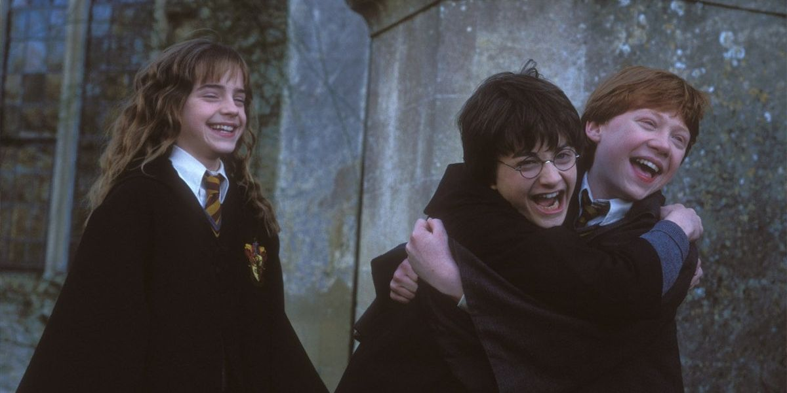

Conocido como el Trío de oro, es un nombre popular para los tres personajes principales de la serie Harry Potter. El Trío, de ahí el nombre, tiene tres miembros, siendo Harry Potter, Ron Weasley y Hermione Granger. A lo largo de la saga, acompañamos al trío en sus aventuras y aprendizajes. Vamos a conocer un poco de ellos.
Harry Potter es un mago de sangre mestiza y el único hijo de James y Lily Potter, a la edad de once años, descubre que es un mago y comienza a asistir a Hogwarts, siendo seleccionado en la casa de Gryffindor. Se convierte en el mejor amigo de Ron Weasley y Hermione Granger y en el jugador de Quidditch más joven en más de un siglo.
Fue uno de los magos más famosos de la época moderna, también conocido como el "Elegido". Es conocido por ser la causa de la primera caída de Voldemort y es responsable de la derrota final del Señor Tenebroso. Harry también fue el profesor/líder de Ejército de Dumbledore y fue el mejor de su clase en Defensa Contra las Artes Oscuras. Después de la Segunda Guerra Mágica se convirtió en un Auror y ascendió a la posición de Jefe de Aurores a la edad de 26 años.
Ron Weasley es un mago sangre pura, el sexto y más joven hijo de Arthur y Molly Weasley. Ron comenzó a asistir al Colegio Hogwarts de Magia y Hechicería en 1991 y fue seleccionado para la Casa Gryffindor. Pronto se convirtió en el mejor amigo de su compañero Harry Potter y luego de Hermione Granger.
Ayudó a Harry y Hermione en la búsqueda de los Horrocruxes de Voldemort y luchó en la Batalla de Hogwarts. Ron era miembro del ejército de Dumbledore y demostró un talento para el Ajedrez mágico. Después de la Segunda Guerra Mágica, se convirtió en un Auror, junto a Harry. Ron fue un Auror durante dos años antes de retirarse y unirse a su hermano George en Sortilegios Weasley.
Hermione Granger es una bruja hija de muggles. A los once años descubrió su don mágico y fue aceptada en el Colegio Hogwarts. Hermione empezó sus estudios mágicos el 1 de septiembre de 1991, poco antes de cumplir doce años y fue seleccionada para la Casa Gryffindor. Posee una mente académica brillante, y demostró ser una estudiante superdotada.
Hermione ayudó a Harry y Ron en la búsqueda de los Horrocruxes de Voldemort y luchó en la Batalla de Hogwarts. Hermione fue la fundadora del Ejército de Dumbledore y era la primera de su clase, mientras asistía a Hogwarts. Después de graduarse en Hogwarts, fue a trabajar para el Ministerio de Magia, trabajando en el Departamento de Regulación y Control de las Criaturas Mágicas y el Departamento de Aplicación de la Ley Mágica. Hermione finalmente se convirtió en Ministra de Magia.
| Harry Potter | Hermione Granger | Ron Weasley |
| Un rostro delgado, rodillas huesudas, pelo negro y ojos verdes brillantes. | Tiene el pelo castaño claro, largo y enmarañado, un poco ondulado. Los ojos castaños, bastante grandes | Chico pelirrojo alto y delgado, una cara cubierta de pecas. Tiene, además, ojos azules y una larga nariz. |
| es conocido por su valentía, determinación y lealtad hacia sus amigos. También es conocido por su sentido del humor y su capacidad de hacer amistades. | Es conocida por su inteligencia excepcional, su determinación y su valentía, es una joven comprometida con sus ideales. | Es un personaje que se caracteriza por ser fiel, honrado, prudente, divertido, celoso, sarcástico, algo cascarrabias, pero ante todo un amigo leal. |